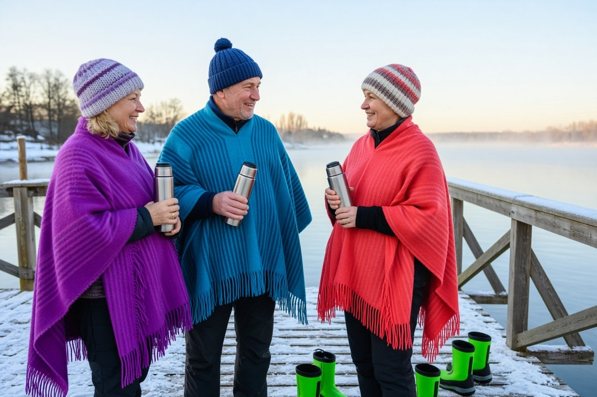
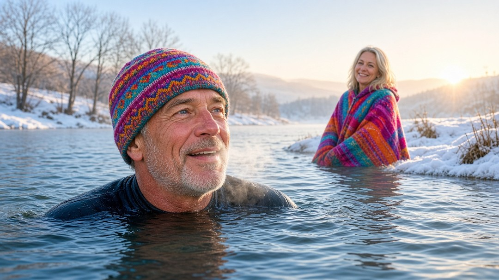
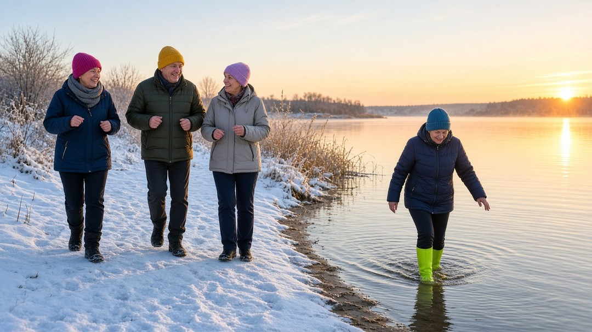

Po 50. roku życia pytanie, czy morsowanie jest zdrowe, zasługuje na spokojną odpowiedź, nie na obietnicę. Wejście do zimnej wody od razu przyspiesza oddech, tętno i ciśnienie — i właśnie ten pierwszy moment, a nie hartowanie odporności, jest w badaniach opisany najrzetelniej. Jeśli masz chorobę serca lub krążenia, zacznij od rozmowy z lekarzem. A ile minut wytrzymać w wodzie za pierwszym razem? Źródła podają różne liczby, więc dajemy bezpieczny zakres.
Szybka odpowiedź
Czy morsowanie jest zdrowe po 50? Nie ma mocnych dowodów, że poprawia zdrowie, a szok zimna w pierwszej minucie mocno obciąża serce i podnosi ciśnienie. Jeśli masz chorobę serca lub krążenia albo bierzesz leki na serce lub ciśnienie, najpierw porozmawiaj z lekarzem i pierwszy raz wejdź do wody z kimś, nie po alkoholu, bez wskakiwania i bez zanurzania głowy.
Kluczowe wnioski
- Nie ma mocnych dowodów, że morsowanie poprawia zdrowie; ryzyko szoku zimna i obciążenia serca jest opisane solidniej niż korzyści.
- Po wejściu do zimnej wody tętno i ciśnienie gwałtownie rosną; szczyt szoku przypada około 30. sekundy i zwykle słabnie w ciągu 1–3 minut.
- Przy chorobie wieńcowej, po zawale, wadach zastawek, arytmii, źle kontrolowanym nadciśnieniu lub po udarze najpierw porozmawiaj z lekarzem.
- Pierwsze wejście rób z kimś, nie po alkoholu, bez skoku i bez głowy pod wodą; minuty rozgrzewki i czasu w wodzie źródła podają różnie.
Czy morsowanie jest zdrowe po 50?
Nie ma mocnych, jednoznacznych dowodów, że morsowanie poprawia zdrowie u osób po 50. roku życia. Prof. Tomasz Zdrojewski, kardiolog z Gdańskiego Uniwersytetu Medycznego, który sam morsuje od 30 lat, mówił w grudniu 2023 r. wprost, że jednoznacznych dowodów nie ma, choć jego zdaniem morsować warto. Przegląd Espeland i współpracowników z 2022 r., czyli zestawienie ponad 100 badań, też zostawia sprawę otwartą: prace są często małe, a spór o realne skutki zanurzenia trwa. Lepiej opisane jest ryzyko pierwszych minut niż obiecywane korzyści.
To nie znaczy, że każdy po pięćdziesiątce musi zrezygnować. Znaczy, że zimna woda nie jest lekiem i nie zastępuje leczenia. Osoby z chorobą serca lub cukrzycą, jak podkreślał Zdrojewski, mogą morsować dopiero po konsultacji. W Polsce nie ma osobnej statystyki wypadków przy morsowaniu. Policja podaje utonięcia ogółem: w 2025 r. utonęły 292 osoby, w tym 137 w wieku powyżej 50 lat; alkohol zaznaczono w 58 przypadkach. Nie wiadomo, ilu z tych ludzi morsowało.

Co się dzieje z sercem i ciśnieniem w pierwszych minutach?
Wchodzisz do zimnej wody i ciało reaguje, zanim zdążysz się przyzwyczaić. To szok zimna: mimowolny wdech, szybki oddech, skok tętna i ciśnienia. Szczyt przypada około 30. sekundy, a reakcja zwykle słabnie w ciągu 1–3 minut. W przeglądzie Tiptona z 2025 r. oddech często wraca pod kontrolę po około minucie; do płynięcia lepiej poczekać, aż oddech się uspokoi.
W małym szwajcarskim badaniu z 2026 r. (Merkt i współpracownicy) wzięło udział 20 regularnie trenujących amatorów sportu w wieku średnio 56 lat, przyzwyczajonych do zimnej wody, w wodzie o temperaturze 7°C. Tętno wzrosło średnio o około 40 uderzeń na minutę, czyli o ponad 40%. U jednej osoby serce przez chwilę (8 uderzeń) biło nierówno i szybko, po czym samo wróciło do normy. Nikt z nich nie miał znanej choroby serca. Autorzy piszą, że tak mała grupa nie pozwala na pewne wnioski o bezpieczeństwie.
Ciśnienie w wodzie też rośnie ostro, nie spada. W polskim badaniu Bielec i Jóźwiak z 2020 r. u 25 kobiet (średnia wieku około 40 lat) po 4 minutach w wodzie 1,8°C ciśnienie skurczowe wzrosło średnio z 125,6 do 141,9 mm Hg. Po sezonie ciśnienie spoczynkowe nie zmieniło się istotnie. Nie ma więc podstaw, by mówić, że regularne morsowanie obniża ciśnienie mierzone na co dzień.
Osobna sprawa to zanurzenie głowy przy wstrzymanym oddechu. Shattock i Tipton opisali konflikt dwóch odruchów: szoku zimna, który przyspiesza serce, i odruchu nurkowego, który zwalnia serce, gdy twarz trafia do zimnej wody. W badaniach, na które się powołują, zaburzenia rytmu serca (arytmie) pojawiały się w 62–82% prób. Dotyczyło to młodych, zdrowych osób, które zanurzały się w zimnej wodzie z głową pod wodą i wstrzymywały oddech. Gdy głowa zostawała nad wodą, było to około 2% prób. Dlatego na początek zostawiamy twarz i głowę nad wodą.
| Kiedy | Co się dzieje | Co z tego wynika |
|---|---|---|
| Pierwsze sekundy | Mimowolny wdech (gasp) i szybki oddech; rośnie tętno i obciążenie serca | Nie wskakuj; poczekaj, aż oddech wróci pod kontrolę |
| Ok. 30 sekund | Szczyt szoku zimna | To zwykle najgorszy moment dla oddechu |
| 1–3 minuty | Reakcja zwykle słabnie; oddech częściej wraca pod kontrolę po ok. 1 minucie | Pływaj dopiero, gdy oddech się uspokoi; na pierwsze wejście to już górny zakres czasu |
| Zanurzenie głowy i wstrzymanie oddechu | W badaniach u młodych, zdrowych osób arytmie w 62–82% prób; przy głowie nad wodą ok. 2% | Na początek zostaw głowę i twarz nad wodą |
| Ciśnienie w wodzie | Ostry wzrost, np. ze 125,6 do 141,9 mm Hg po 4 min (Bielec, kobiety, średnia wieku ok. 40 lat) | To nie jest spadek ciśnienia; spoczynkowe po sezonie nie zmieniło się istotnie |
| Później | Hipotermia, czyli wychłodzenie organizmu, zwykle dopiero po ok. 30 min nawet w bardzo zimnej wodzie | Przy krótkim wejściu hipotermia zwykle nie zdąży się rozwinąć |

Kiedy najpierw porozmawiać z lekarzem?
Polskie Towarzystwo Kardiologiczne i Europejskie Towarzystwo Kardiologiczne nie wydały stanowiska o morsowaniu jako takim. ESC w wytycznych z 2020 r. ma tylko jedno, wąskie zdanie: osoby z zespołem długiego QT typu 1 (LQT1), czyli wrodzonym zaburzeniem elektrycznej pracy serca widocznym w EKG, nie powinny skakać do zimnej wody. Pozostałe ostrzeżenia z tego artykułu pochodzą z polskich poradników medycznych i z rad organizacji ratowniczych, a nie od towarzystw kardiologicznych.
Najwięcej ostrożności wymagają choroby serca i krążenia. Jeśli masz chorobę wieńcową, przebyty zawał, wadę zastawek, zaburzenia rytmu (w tym długie QT), niekontrolowane nadciśnienie albo przebyty udar, najpierw porozmawiaj z lekarzem. Jeśli bierzesz leki na serce lub ciśnienie, też zapytaj. Nie odstawiaj ich na własną rękę. Nie piszemy natomiast, że morsowanie jest zakazane po 65. roku życia albo przy żylakach, bo nie ma na to dobrych dowodów.
| Sytuacja | Co zrobić | Dlaczego |
|---|---|---|
| Choroba wieńcowa, przebyty zawał, wady zastawek | Najpierw porozmawiaj z lekarzem, zanim wejdziesz | Zimna woda nagle podnosi tętno i ciśnienie, a to obciąża chore serce |
| Zaburzenia rytmu, zespół długiego QT (w tym LQT1) | Najpierw lekarz; przy LQT1 ESC odradza skakanie do zimnej wody | ESC 2020 — tylko to wąskie zdanie — oraz mechanizm arytmii przy zimnej wodzie |
| Niekontrolowane nadciśnienie | Najpierw razem z lekarzem ustabilizuj ciśnienie | W wodzie ciśnienie rośnie ostro, a nie spada |
| Przebyty udar | Najpierw porozmawiaj z lekarzem | Choroby krążenia, w tym mózgowego |
| Leki na serce lub ciśnienie | Zapytaj lekarza; nie odstawiaj leków sam | Tylko lekarz zna Twoje leki i choroby |
| Cukrzyca | Najpierw porozmawiaj z lekarzem, zanim wejdziesz | Prof. Zdrojewski zaleca konsultację osobom z cukrzycą i chorobą serca |
Jak wygląda pierwsze wejście do zimnej wody?
Źródła są zgodne w kilku punktach i rozjeżdżają się w minutach. Nie wchodź sam, nie po alkoholu, nie wskakuj, na początek nie zanurzaj głowy ani twarzy, wejdź w butach i wyjdź, gdy pojawi się niepokojący objaw. Alkohol osłabia ocenę sytuacji, co podkreślają ratownicy. W 2025 r. policja wskazała alkohol jako przyczynę 58 z 292 utonięć. W razie jakichkolwiek niepokojących objawów wyjdź z wody. Sygnałem, że czas skończyć i się ogrzać, są między innymi splątanie lub dezorientacja oraz sine usta albo sina skóra.
Czas rozgrzewki i zanurzenia nie ma jednej normy. W badaniu Bielec grupa robiła zbiorową, 10-minutową rozgrzewkę. W praktycznych opisach pojawia się około 10–15 minut umiarkowanego ruchu, który ma rozgrzać, a nie zmęczyć. Prof. Zdrojewski zaleca co najmniej 30 minut intensywnej rozgrzewki, na przykład gimnastyki i marszobiegu. Dla kogoś, kto na co dzień mało się rusza, to może być za dużo, dlatego lepiej zacząć od krótszej, umiarkowanej rozgrzewki. Na pierwszy raz wystarczy około minuty. Górna granica, o której mówią źródła, to 2–3 minuty. Źródła różnią się w liczbach, więc to zakres, nie przepis dla każdego.
Po wyjściu szybko się wytrzyj i ubierz. Najzimniej może Ci być nawet około 10 minut po wyjściu, bo ciało dalej się wychładza. Hipotermia, czyli wychłodzenie organizmu poniżej 35°C, rozwija się zwykle dużo później niż szok zimna; nawet w bardzo zimnej wodzie dopiero po około 30 minutach. Przy podejrzeniu hipotermii niezwłocznie wezwij karetkę pogotowia; nie rozgrzewaj nikogo alkoholem.

Czego badania jeszcze nie potwierdzają?
Często powtarza się, że morsowanie tnie infekcje albo uczy odporności. Tego nie potwierdzają mocne dane. W holenderskim badaniu Buijze z 2016 r. ponad 3000 osób w wieku 18–65 lat bez ciężkich chorób kończyło ciepły prysznic 30–90 sekundami zimnej wody. Przez trzy miesiące zwolnienie lekarskie wzięło około 32 na 100 z nich, a w grupie bez zimnego prysznica około 35 na 100. W przeliczeniu badacze podali to jako 29% mniej dni nieobecności w pracy. Dane pochodziły z ankiet wypełnianych przez samych uczestników. Liczba dni choroby się nie zmieniła. To był prysznic, nie przerębel. Późniejszy przegląd badań (Cain i in., 2025) nie wykazał, by zimna woda zmieniała wskaźniki odporności we krwi tuż po kąpieli ani godzinę później. Autorzy ocenili pewność tych danych jako niską.
Nie powtarzamy też hasła o 40% mniejszej liczbie infekcji — to przekręcenie starej ankiety, nie wynik badania klinicznego. Nie ma mocnego dowodu, że morsowanie leczy depresję albo obniża ciśnienie spoczynkowe; o ciśnieniu była mowa wyżej. W sieci krąży też „zasada 1-10-1”. To wskazówka dla kogoś, kto przypadkiem wpadł do zimnej wody, a nie instrukcja pierwszego morsowania.
Najczęściej zadawane pytania
Czy morsowanie jest zdrowe?
Nie ma jednoznacznych dowodów naukowych, że morsowanie poprawia zdrowie. Przeglądy zostawiają sprawę otwartą, bo badania są często małe, a ryzyko szoku zimna i obciążenia serca jest opisane dokładniej niż obiecane korzyści. Zimna woda nie jest lekiem i nie zastępuje leczenia.
Czy morsowanie jest zdrowe dla serca?
Dla serca pierwsze minuty są obciążeniem, nie odpoczynkiem: rośnie tętno i ciśnienie, a oddech przyspiesza. W małym badaniu osób w średnim wieku około 56 lat tętno wzrosło średnio o około 40 uderzeń na minutę, czyli o ponad 40%. Jeśli masz chorobę serca, zaburzenia rytmu albo długie QT, najpierw porozmawiaj z lekarzem. ESC nie ma ogólnego stanowiska o morsowaniu; odradza tylko skakanie do zimnej wody osobom z LQT1.
Morsowanie a ciśnienie krwi?
W wodzie ciśnienie rośnie ostro. W polskim badaniu po 4 minutach w lodowatej wodzie ciśnienie skurczowe wzrosło średnio z 125,6 do 141,9 mm Hg. Po sezonie ciśnienie spoczynkowe nie zmieniło się istotnie, więc nie ma podstaw, by mówić, że morsowanie obniża ciśnienie mierzone na co dzień. Przy niekontrolowanym nadciśnieniu najpierw porozmawiaj z lekarzem.
Morsowanie przeciwwskazania?
Nie ma listy PTK ani ESC „przeciwwskazań do morsowania”. Najważniejsze są choroby serca i krążenia: przy chorobie wieńcowej, po zawale, wadach zastawek, zaburzeniach rytmu (w tym długim QT), niekontrolowanym nadciśnieniu lub po udarze najpierw idź do lekarza. Przy cukrzycy, jak podkreślał prof. Zdrojewski, też zacznij od konsultacji. Jeśli bierzesz leki na serce lub ciśnienie, też zapytaj. Same żylaki ani wiek powyżej 65 lat nie są na tej liście, bo nie ma dobrych dowodów, żeby uznawać je za przeciwwskazanie.
Jak zacząć morsowanie?
Jeśli masz chorobę serca lub krążenia albo bierzesz leki na serce lub ciśnienie, zacznij od rozmowy z lekarzem. Potem pierwsze wejście z kimś, nie po alkoholu, bez wskakiwania i bez zanurzania głowy ani twarzy, w butach. Rozgrzej się umiarkowanie, wejdź stopniowo i wyjdź, gdy oddech się uspokoi albo pojawi się niepokojący objaw.
Ile morsować pierwszy raz?
Źródła różnią się w liczbach, więc nie ma jednej normy dla wszystkich. W tym tekście przyjmujemy ostrożny zakres: pierwsze wejście do około 1 minuty i najwyżej 2–3 minuty, po rozgrzewce rzędu 10–15 minut umiarkowanego ruchu. W jednym badaniu rozgrzewka trwała 10 minut, a prof. Zdrojewski mówi o kilkudziesięciu sekundach w wodzie, najwyżej 2–3 minutach u zdrowych osób. Wyjdź wcześniej, jeśli oddech albo samopoczucie tego wymagają.
Co się dzieje z organizmem po morsowaniu?
Tuż po wejściu pojawia się szok zimna: mimowolny wdech, szybki oddech, skok tętna i ciśnienia, ze szczytem około 30. sekundy. Reakcja zwykle słabnie w ciągu 1–3 minut. Po wyjściu można poczuć większe zimno dopiero po chwili, bo temperatura ciała jeszcze spada. Hipotermia przychodzi dużo później niż ten pierwszy wstrząs, więc przy krótkim wejściu zwykle nie zdąży się rozwinąć. Jeśli jednak podejrzewasz wychłodzenie, wezwij karetkę pogotowia.
Źródła
- Espeland i in. (2022): przegląd literatury (104 prace) o skutkach pływania w zimnej wodzie; to nie metaanaliza; spór trwa, grupy często małe.
- Knechtle i in. (2020): przegląd narracyjny fizjologii zimnej wody; szczyt szoku zimna około 30 s, adaptacja w ok. 2 min.
- Shattock i Tipton (2012): przegląd fizjologiczny konfliktu autonomicznego; arytmie w 62–82% prób u młodych zdrowych przy zanurzeniu twarzy i wstrzymanym oddechu, ok. 2% przy głowie nad wodą.
- Merkt i in. (2026, J Exerc Sci Fit): n=20, średni wiek 56±6,4 lat, woda 7°C; szczyt tętna +40,6±12,5 uderzeń/min; jeden nieutrwalony częstoskurcz przedsionkowy; data dziennego wydania nieustalona, publication_date=null.
- Bielec i Jóźwiak (2020, Acta Balneol): n=25 kobiet, średnia wieku 39,9 lat, 4 min w wodzie 1,8°C, rozgrzewka 10 min; SBP z 125,6 do 141,9 mm Hg; brak istotnej zmiany ciśnienia spoczynkowego po sezonie. URL kanoniczny to DOI (200 po przekierowaniu do PDF wydawcy).
- Buijze i in. (2016, PLOS ONE): RCT n=3018, wiek 18–65 lat, zimny prysznic 30/60/90 s po ciepłym; −29% absencji w pracy (IRR 0,71), bez zmiany liczby dni choroby. To nie morsowanie.
- Cain i in. (2025): przegląd systematyczny i metaanaliza 11 RCT (3018 z 3177 osób pochodzi z Buijze); brak istotnego wpływu zimnych zabiegów na odporność.
- Tipton i in. (2025, Inj Prev): opis szoku zimna (gasp, hiperwentylacja, wzrost ciśnienia i obciążenia serca); adaptacja w pierwszych 2 min, kontrola oddechu zwykle po ok. 1 min; hipotermia zwykle nie wcześniej niż po 30 min.
- NHS (przegląd 9.06.2023): hipotermia to temperatura ciała poniżej 35°C; potrzebna pilna pomoc medyczna; nie rozgrzewać alkoholem.
- West Midlands Ambulance Service, Open water safety (przegląd 16.06.2026): woda poniżej 15°C jest zimna; gasp, szybki oddech, wyższe tętno; alkohol zaburza ocenę sytuacji.
- ESC 2020 Sports Cardiology (Pelliccia i in., Eur Heart J): osoby z LQT1 nie powinny skakać do zimnej wody. To nie jest stanowisko o morsowaniu. URL DOI; końcowy wydawca zwraca 403, stąd requires_local_verification i http_status null. Treść potwierdzona w kopii PDF z researchu Badacza.
- Policja, Statystyka utonięć 2025 (PDF): 327 wypadków tonięć, 292 osoby utonęły, 137 powyżej 50 lat, alkohol w 58 przypadkach. To utonięcia ogółem, bez kategorii morsowanie.
- PAP / Nauka w Polsce, 28.12.2023: wywiad z prof. Tomaszem Zdrojewskim. Cytat: brak jednoznacznych dowodów naukowych potwierdzających korzystny wpływ morsowania na zdrowie. Rekreacyjnie: kilkadziesiąt sekund, max 2–3 min; przy chorobach serca lub cukrzycy — po konsultacji. To nie wytyczna towarzystwa.
- mp.pl, poradnik dla pacjentów z 18.07.2024 (nie wytyczne towarzystwa): w razie niepokojących objawów wyjść z wody; przy hipotermii niezwłocznie wezwać karetkę pogotowia. Źródło portalowe.
- RLSS UK, Top Recommendations for Safer Open Water Swimming (publ. 20.06.2024): przy m.in. splątaniu/dezorientacji albo sinych ustach lub skórze wyjść z wody i się ogrzać. Porada ratownicza, nie wytyczne kliniczne. Host poza allowistą §26.
- National Center for Cold Water Safety: zasada 1-10-1 dotyczy kogoś, kto przypadkiem wpadł do zimnej wody, a nie jest instrukcją pierwszego morsowania. Host poza allowistą §26.
Uwaga: Artykuł ma charakter informacyjny i edukacyjny. Nie zastępuje konsultacji lekarskiej, diagnozy ani leczenia.